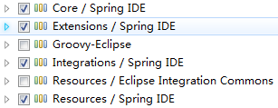

一、Spring是什么？ 1.Spring 是一个开源框架。
Spring 是一个 IOC(DI) 和 AOP 容器框架.
具体描述：
SPRING TOOL SUITE 是一个 Eclipse 插件，利用该插件可以更方便的在 Eclipse 平台上开发基于 Spring 的应用。注意：先把该插件下载下来
安装方法说明：
Help –> Install New Software…
Click Add…
In dialog Add Site dialog, click Archive…
Navigate to springsource-tool-suite-3.4.0.RELEASE-e4.3.1-updatesite.zip and click Open
Clicking OK in the Add Site dialog will bring you back to the dialog ‘Install’
Select the xxx/Spring IDE that has appeared
Click Next and then Finish
Approve the license
Restart eclipse when that is asked

三、搭建Spring开发环境 1.把以下 jar 包加入到工程的 classpath 下:
Spring 的配置文件: 一个典型的 Spring 项目需要创建一个或多个 Bean 配置文件, 这些配置文件用于在 Spring IOC 容器里配置 Bean. Bean 的配置文件可以放在 classpath 下, 也可以放在其它目录下.
2.建立Spring项目注意：这是java项目不是动态web项目，jar包需要手动build path，我就是因为这个坑浪费了不少时间！！！ 1
2
3
4
5
6
7
8
9
10
11
12
13
14
package com.lizz;
public class Hello {
private String name;
public void setName(String name) {
System.out.println("setName: " + name);
this.name = name;
}
public void hello() {
System.out.println(name);
}
public Hello() {
System.out.println("constructor...");
}
}
Main.java1
2
3
4
5
6
7
8
9
10
11
12
13
14
15
16
17
18
19
20
21
22
23
24
25
package com.lizz;
import org.springframework.context.ApplicationContext;
import org.springframework.context.support.ClassPathXmlApplicationContext;
public class Main {
public static void main(String[] args) {
/*
* 原始的java编写方法
* 1.创建Hello的一个对象
* Hello hello = new Hello();
* 2.为name属性赋值
* hello.setName("lizz");
*/
/*
* 使用Spring框架
*/
// 1.创建Spring的IOC容器对象
// ApplicationContext代表Spring里面的IOC容器
// ClassPathXmlApplicationContext表示配置文件在类路径下
ApplicationContext ctx = new ClassPathXmlApplicationContext("applicationContext.xml");
// 2.从IOC容器中获取Bean实例
Hello hello = (Hello) ctx.getBean("hello");
// 调用hello方法
hello.hello();
}
}
注意，一定要把jar包add path进去，不然报错；还有applicationContext.xml文件放在classpath路径下，可以自己打开.classpath文件查看kind=src对应的path(默认是src,即放在src文件夹下)
applicationContext.xml1
2
3
4
5
6
7
8
9
10
11
12
13
14
15
16
17
18
19
20
21
22
<?xml version="1.0" encoding="UTF-8"?>
<beans xmlns="http://www.springframework.org/schema/beans"
xmlns:xsi="http://www.w3.org/2001/XMLSchema-instance" xmlns:aop="http://www.springframework.org/schema/aop"
xmlns:context="http://www.springframework.org/schema/context" xmlns:tx="http://www.springframework.org/schema/tx"
xmlns:util="http://www.springframework.org/schema/util" xmlns:p="http://www.springframework.org/schema/p"
xsi:schemaLocation="http://www.springframework.org/schema/beans
http://www.springframework.org/schema/beans/spring-beans.xsd
http://www.springframework.org/schema/aop
http://www.springframework.org/schema/aop/spring-aop-4.0.xsd
http://www.springframework.org/schema/tx
http://www.springframework.org/schema/tx/spring-tx-4.0.xsd
http://www.springframework.org/schema/context
http://www.springframework.org/schema/context/spring-context-4.0.xsd
http://www.springframework.org/schema/util
http://www.springframework.org/schema/util/spring-util-4.0.xsd
">
<!-- 配置bean -->
<bean id="hello" class="com.lizz.Hello">
<!-- 注意这里的name对应的是Hello.java类里面定义的name属性名，Spring是该属性的初始化值 -->
<property name="name" value="Spring"></property>
</bean>
</beans>
运行结果：可以看到，ApplicationContext ctx = new ClassPathXmlApplicationContext("applicationContext.xml");这一步给Hello.java类设置了初始值，调用了setName方法